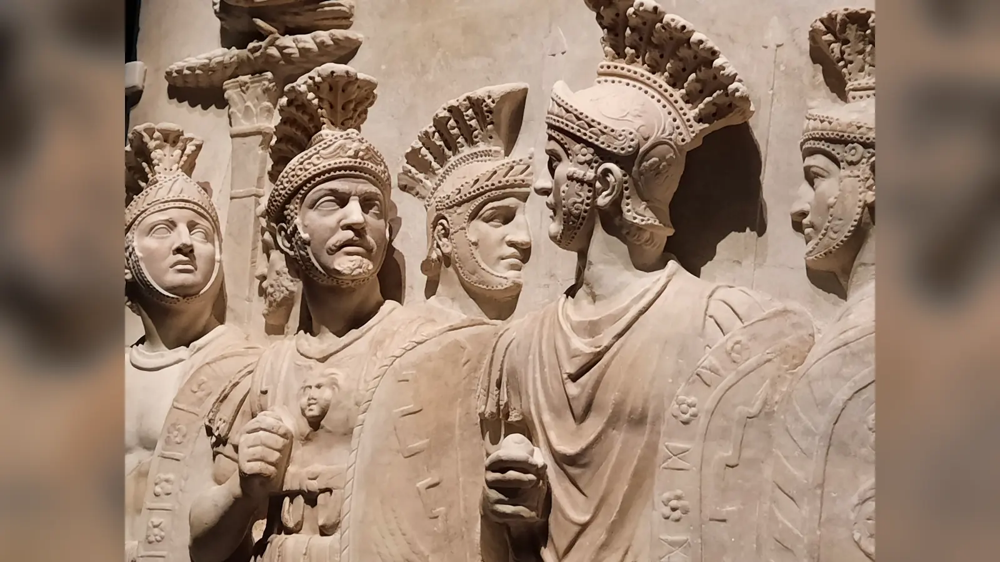
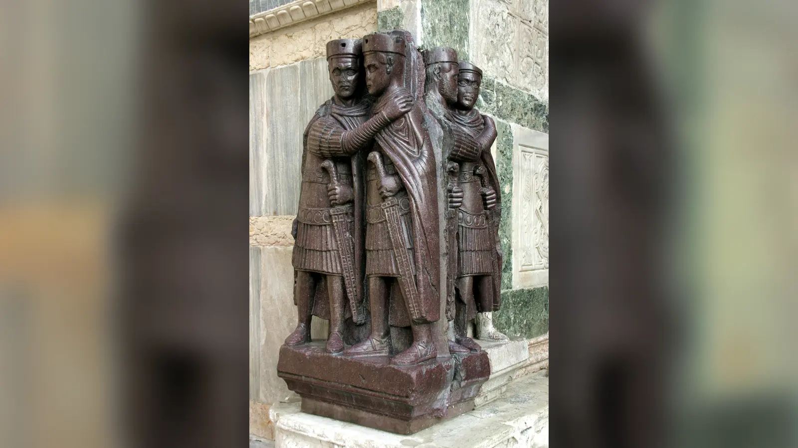

Roma imparatoru olmak antik dünyanın ulaşılabilecek en güçlü makamlarından birine sahip olmak demekti; fakat bu güç sahibini aynı zamanda imparatorluğun bütün büyük gerilimlerinin merkezine yerleştiriyordu. Bir hükümdar orduyu yönetiyor, eyalet valilerini ve yüksek görevlileri etkiliyor, büyük mali kaynakları dağıtıyor, savaş ve barış kararlarının merkezinde bulunuyor ve hanedanın geleceğini belirliyordu. Bu kadar büyük yetkinin el değiştirmesi ise modern anayasal monarşilerdeki gibi herkes tarafından tartışmasız kabul edilen tek bir veraset kanununa bağlı değildi. Hanedan bağı, evlat edinme, selefin tercihi, ortak hükümdarlık, Senato’nun tanıması ve askerlerin ilanı farklı dönemlerde farklı ağırlıklarla devreye girebiliyordu. Bu belirsizlik, iktidarın özellikle kriz zamanlarında pazarlıkla değil silahla el değiştirmesini kolaylaştırdı.
Bu yüzden Roma imparatorlarının neden öldürüldüğü sorusunun cevabı yalnız kişisel nefret, saray entrikası veya Roma toplumunun sözde “vahşiliği” değildir. İmparatorun meşruiyeti ordu, hanedan, saray, Senato, başkent halkı ve eyaletlerdeki güç merkezleri arasında kurulmuş kırılgan bir uzlaşmaya dayanıyordu. Hükümdar zafer kazanabildiği, askerlerin maaşını ödeyebildiği, düzeni koruyabildiği ve yerine geçecek kişiyi kabul ettirebildiği sürece bu yapı uzun süre çalışabilirdi. Fakat askerî yenilgi, mali kriz, hanedanın zayıflaması veya güçlü bir komutanın alternatif hükümdar olarak ortaya çıkması hâlinde aynı yapı hızla parçalanabiliyordu. Başarılı bir darbenin ödülü bütün imparatorluk olduğu için, iktidarı zorla ele geçirme ihtimali de hiçbir zaman bütünüyle ortadan kalkmadı.
Yine de Roma tarihini aralıksız imparator cinayetlerinden oluşan beş yüzyıllık bir kan banyosu gibi görmek aynı ölçüde yanlıştır. Augustus kırk yılı aşkın süre iktidarda kaldı; Vespasianus, Traianus, Hadrianus, Antoninus Pius ve Marcus Aurelius gibi hükümdarlar saray suikastıyla devrilmedi. Şiddetli iktidar değişimleri bütün dönemlere eşit dağılmadı. MS 69’daki Dört İmparator Yılı, 193’te Commodus’un ölümünün ardından başlayan mücadele ve özellikle 235–284 arasındaki Üçüncü Yüzyıl Krizi çok daha tehlikeli dönemlerdi. Asıl soru bu nedenle “Romalılar neden imparatorlarını öldürüyordu?” değil, bazı dönemlerde imparatorluk makamının neden şiddet yoluyla el değiştirmeye bu kadar açık hâle geldiğidir.
Roma İmparatorları Gerçekten Çok Sık mı Öldürülüyordu?
Bu soruya bir yüzde vererek başlamak cazip görünür, fakat önce kimi “Roma imparatoru”, hangi ölümü de “öldürülme” saydığımızı belirlemek gerekir. Augustus’tan Batı Roma’nın sonuna kadar yalnız genel kabul görmüş kıdemli hükümdarları mı sayacağız, yoksa ortak imparatorları, birkaç hafta tanınmış adayları ve rakip ordular tarafından ilan edilen kişileri de mi ekleyeceğiz? İç savaşı kaybedip idam edilen biriyle yatak odasında öldürülen bir hükümdarı aynı kategoriye koymak da sonuçları değiştirir. Antik kaynakların bazı ölümler için birbiriyle çelişmesi işi daha da zorlaştırır.
Tiberius’un MS 37’deki ölümü buna iyi örnektir. Bazı antik anlatılarda onun doğal biçimde ölmediği ve son anlarında öldürüldüğü iddia edilir; fakat bunu kesin tarihsel gerçek olarak kabul etmek mümkün değildir. Claudius’un MS 54’te mantarla zehirlendiği ve Agrippina’nın Nero’nun önünü açtığı anlatısı da antik kaynaklarda güçlü biçimde yer alır, ancak olayın ayrıntıları ve hatta zehirlenmenin kesinliği modern tarihçiler açısından tartışmalıdır. Buna karşılık Caligula’nın MS 41’de bir komplo sonucu öldürülmesi konusunda olayın temel niteliği tartışmalı değildir.
Ölüm biçimlerini ayırmak da önemlidir. Nero, sarayında suikastçıların elinde ölmedi. Galya’daki isyan, askerî desteğin çözülmesi ve Senato’nun onu halk düşmanı ilan etmesi üzerine Roma’dan kaçtı ve MS 68’de intihar etti. Otho, Vitellius’a karşı iç savaşı kaybettikten sonra daha fazla kan dökülmesini önlemek istediğini belirterek intihar etti. Decius savaş alanında Gotlara karşı öldü; Valerianus Sasani hükümdarı I. Şapur’a esir düştükten sonra öldü; Julianus ise Pers seferinde aldığı yaradan yaşamını yitirdi. Bunların hepsini “Roma imparatorları öldürülüyordu” başlığı altında tek nedene bağlamak, birbirinden tamamen farklı siyasi ve askerî olayları karıştırır.
Yine de saray suikastları, askerî darbeler ve iç savaşlar Roma imparatorluk siyasetinin gerçek ve önemli parçalarıydı. Özellikle veraset uzlaşmasının çöktüğü zamanlarda şiddet bir istisnadan fiilî iktidar aktarım yöntemine dönüşebiliyordu. Bu yoğunlaşmanın nedenini anlamak için Augustus’un kurduğu sistemin içine bakmak gerekir.
Augustus’un Kurduğu Sistemin Temel Çelişkisi
Augustus iç savaşlardan çıkmış Roma’da kendisini açıkça kral ilan etmedi. Cumhuriyet’in kurumlarını tamamen ortadan kaldırdığını da söylemedi. Konsüllük, Senato ve halk meclisleri yaşamaya devam ederken Augustus farklı yetki ve onurları kendi şahsında topladı. Princeps, yani kabaca “birinci yurttaş”, kullandığı siyasi dilin merkezindeydi; bu nedenle erken imparatorluk düzenine modern tarih yazımında principatus denir. Imperator ise başlangıçta askerî zafer ve komutayla ilişkili bir unvanken zamanla imparatorluk titulaturasının temel parçalarından biri hâline geldi. Augustus’un tribunicia potestas olarak anılan tribunluk yetkileri ve geniş askerî imperiumu, Cumhuriyet biçimleri korunurken gerçek iktidarın onun çevresinde toplanmasını sağladı.
Bu düzen Augustus için olağanüstü başarılıydı, fakat veraset bakımından yapısal bir belirsizlik bıraktı. Eğer devlet resmen kalıtsal krallık değilse Augustus’un “tahtı” oğluna bırakacağı açıkça yazılmış bir anayasa da yoktu. Zaten Augustus’un biyolojik oğlu yoktu. Yıllar boyunca Marcellus, Agrippa, Gaius ve Lucius Caesar gibi farklı akrabalar ön plana çıkarıldı; ölümler bu planları bozdu ve sonunda Tiberius evlat edinilerek güçlü halef konumuna getirildi. MS 14’te Augustus öldüğünde Tiberius yalnız aile bağı nedeniyle değil, daha önce aldığı yetkiler, askerî deneyimi ve siyasi konumu sayesinde iktidarı devralabildi.
Bu durum sonraki yüzyılların temel problemini oluşturdu. İmparatorluk makamı gerçekte vardı ve muazzam güç taşıyordu, fakat onun kime geçeceğini her koşulda belirleyen tek bir kural yoktu. Hanedan bağı güçlü bir meşruiyet kaynağıydı; buna rağmen tek başına yeterli değildi. Senato’nun tanıması önemliydi; fakat güçlü ordular başka birini desteklediğinde Senato’nun kararı her zaman belirleyici değildi. Askerler bir adayı imparator ilan edebilirdi; fakat başka eyaletlerin orduları onu reddederse iç savaş çıkabilirdi.
Augustus’un çözümü bir bakıma kişisel başarısının kurumsallaşmasıydı. Sorun, kişisel otoritenin sahibinin öldüğü anda yeniden kurulmak zorunda olmasıydı. Uzun süreli hanedanlar bu geçişi kolaylaştırabiliyor, fakat hanedan kesildiğinde veya birden fazla aday aynı anda makul hak iddia ettiğinde imparatorluğun “gerçek sahibi” savaş alanında belirlenebiliyordu.
Roma’da Taht Kime Kalıyordu?
Roma’da veraset sistemi hiç yoktu demek doğru değildir. Daha doğru ifade, bütün dönemlerde geçerli, değişmez ve herkes tarafından kabul edilen tek bir veraset kanununun bulunmadığıdır. Romalılar iktidarın devamlılığını sağlamak için birden fazla yöntem kullandılar. Kan bağı bunlardan biriydi; evlat edinme başka biriydi. Hükümdar bir kişiyi önceden yetkilerle donatabilir, ortak hükümdar yapabilir veya açık biçimde halefi olarak öne çıkarabilirdi. Senato ve ordu da yeni hükümdarın kabulünde rol oynardı.
Julio-Claudian dönemi bu karmaşıklığı açıkça gösterir. Tiberius Augustus’un evlatlık oğluydu. Caligula, Germanicus’un oğlu olarak çok güçlü bir hanedan prestijine sahipti. Caligula öldürüldüğünde amcası Claudius’un Praetorianlar tarafından desteklenmesi, hanedan bağı ile askerî desteğin birleşebildiğini gösterdi. Nero ise Claudius tarafından evlat edinildi ve Claudius’un kızı Octavia ile evlendi. Böylece Julio-Claudian hanedanının son hükümdarı biyolojik olarak Claudius’un oğlu olmamasına rağmen hanedan sisteminin içine yerleştirildi.
Nerva’dan Marcus Aurelius’a uzanan dönem ise sonradan “en yetenekli kişinin evlat edinildiği” ideal bir sistem gibi anlatıldı. Gerçekte Nerva, Traianus’u; Traianus, Hadrianus’u; Hadrianus da Antoninus Pius’u halef çizgisine yerleştirdi. Fakat bu hükümdarların çoğunun hayatta biyolojik erkek mirasçısının bulunmaması önemlidir. Antoninus Pius’un Marcus Aurelius ve Lucius Verus’la ilişkisi de Hadrianus’un yaptığı veraset düzenlemesinin sonucuydu. Marcus Aurelius’un biyolojik oğlu Commodus yetişkinliğe ulaştığında ise onu bir kenara bırakıp “en iyi adayı” seçmedi; Commodus ortak imparator ve ardından halef oldu. Dolayısıyla “Beş İyi İmparator yeteneğe dayalı anayasal seçim sistemi kurmuştu” anlatısı tarihsel gerçekliği fazla düzenli gösterir.
Septimius Severus’un MS 193’te iç savaştan galip çıkması başka bir yöntemi gösterir: askerî başarı yeni bir hanedan yaratabilirdi. Severus daha sonra kendisini Marcus Aurelius’un ailesine bağlayan bir soy iddiası geliştirerek yalnız savaş alanındaki zaferine değil hanedan meşruiyetine de yatırım yaptı. Roma’da iktidarın güvenli olması çoğu zaman tek bir meşruiyet kaynağına değil, birkaçının aynı anda çalışmasına bağlıydı.
İmparatorun Meşruiyeti Neye Dayanıyordu?
Roma imparatoru bir kez tanındığında yalnız “seçilmiş kişi” olarak oturmuyordu; iktidarını sürekli sergilemesi ve yeniden üretmesi gerekiyordu. Hanedan devamlılığı, askerî zafer, adalet dağıtma, kentlerin ve eyaletlerin düzenini koruma, Roma’nın tahıl tedarikini sürdürme, seçkinlerle ilişkileri yönetme ve askerlere ödeme yapabilme hükümdarlığın farklı yüzleriydi. Bir imparator bunların hepsinde kusursuz olmak zorunda değildi, fakat büyük başarısızlıklar rakiplerine siyasi alan açabiliyordu.
Askerî başarı özellikle önemliydi. İmparator imperator unvanını taşıyor ve ordunun en yüksek komutasının kaynağı olarak görülüyordu. Erken imparatorlar her zaman şahsen cephede bulunmasa da zaferler onların adına kazanılıyor, sikkelerde ve anıtlarda hükümdarın başarısı olarak sunuluyordu. Üçüncü yüzyılda sınır baskısı yoğunlaştıkça imparatorun etkili savaş lideri olma beklentisi daha doğrudan hâle geldi. Bir general düşmanı yeniyor ve askerlerin sadakatini kazanıyorsa, başarısız görünen hükümdara karşı potansiyel alternatif olabiliyordu.
Mali kapasite de meşruiyetin parçasıydı. Asker maaşları, terhis ödemeleri ve tahta çıkışlarda verilen donativum, yani askerlere yapılan özel para dağıtımları, hükümdar ile ordu arasındaki maddi ilişkinin görünür unsurlarıydı. Donativumu basitçe “taht için rüşvet” diye çevirmek her durumda doğru değildir; tahta çıkışın törensel ve siyasi beklentilerinden biri hâline gelebilmişti. Fakat hükümdarın karşılayamayacağı vaatlerde bulunması veya askerlerin beklediği ödülleri vermemesi tehlikeliydi.
Senato’nun rolü de ne tamamen sembolikti ne de modern parlamentoya benziyordu. Senatör aristokrasisi yüksek yönetim ve komuta görevlerinde bulunuyor, imparatorun iktidarının seçkinler tarafından kabul edilmesi rejimin istikrarını güçlendiriyordu. Buna rağmen Senato’nun bir adayı tanımaması, o adayın güçlü ordularla Roma’ya gelmesi hâlinde mutlaka belirleyici değildi. Roma imparatorluğu hukuki biçimlerle fiilî güç arasındaki bu sürekli pazarlık üzerinde duruyordu.
Senato, Başkent Halkı ve Eyaletler Neden Hâlâ Önemliydi?
İmparatorluk siyasetini yalnız saray ve ordu arasındaki ilişkiye indirgemek de yanıltıcıdır. Senato, Cumhuriyet dönemindeki egemen konumunu korumuyordu, fakat üyeleri eyalet yönetiminde, yüksek komutanlıklarda ve merkezî idarede önemli roller üstlenmeye devam etti. Yeni hükümdarın Senato tarafından tanınması siyasi süreklilik görüntüsü sağlıyor, öldürülen bir hükümdarın resmî olarak mahkûm edilmesi ise yeni rejimin anlatısını güçlendirebiliyordu. Buna karşılık senatörlerle sert çatışma hükümdarı otomatik olarak devirmese de saray komplolarının ve olumsuz tarih yazımının zeminini genişletebiliyordu.
Roma kentindeki halkın da tamamen edilgen olduğu düşünülmemelidir. Tahıl tedariki, oyunlar ve kamusal düzen hükümdarın başkentteki görünürlüğünün parçalarıydı. Kalabalığın tezahüratı modern seçim değildi, ancak rejimin halk önündeki kabulünü sergileyen bir siyasi dil oluşturuyordu. Başkentte büyük huzursuzluk yaşanması, özellikle başka güç odakları da hükümdara karşıysa, iktidarın kırılganlığını görünür kılabilirdi.
Eyaletler açısından ise imparatorluk meşruiyeti gündelik yönetimle bağlantılıydı. Yerel seçkinler vergilerin toplanması, kentlerin idaresi ve imparatorluk kültünün sürdürülmesinde aracı rol oynuyordu. Bir rakip imparator ortaya çıktığında eyalet yöneticilerinin hangi tarafı tanıyacağı, limanların, vergi gelirlerinin ve askerî ikmal hatlarının kimin elinde kalacağını etkileyebilirdi. Bu yüzden iç savaş yalnız iki generalin ordularını karşılaştırmak değildi; imparatorluğun idari ve mali ağlarının da hangi adayın çevresinde toplanacağı mücadelesiydi.
Ordu Nasıl İmparator Yaratan Bir Güce Dönüştü?
Augustus’un iç savaşlar sonrasında kurduğu daimi ordu, imparatorluğun güvenliği için vazgeçilmezdi. Fakat uzun hizmetli, belirli bölgelerde konuşlanan ve kendi komutanlarıyla yıllarca ilişki kuran büyük ordular aynı zamanda siyasi güç merkezleriydi. Ren’deki lejyonların çıkarları ve deneyimleri Suriye’deki birliklerle aynı olmayabilirdi; Tuna orduları başka bir komutanı destekleyebilir, Britanya’daki birlikler kendi adaylarını öne çıkarabilirdi. Bu nedenle “Roma ordusu imparatoru seçerdi” cümlesi ancak ordunun tek bir siyasi iradeye sahip olmadığı eklendiğinde anlamlıdır.
Askerlerin hükümdarla ilişkisi maaşın ötesine geçiyordu. Başarılı seferler ganimet, terfi ve birlik prestiji getiriyordu. Komutanın askerlerle tehlikeyi paylaşması kişisel sadakati güçlendirebiliyordu. İç savaşlarda ise askerler bir adayın kazanması durumunda ödül bekliyor, kaybetmesi hâlinde kendi geleceklerinin de tehlikeye gireceğini biliyorlardı. Böylece bir kez başlayan taht mücadelesi tarafların uzlaşmasını zorlaştırabiliyordu.
Nero’nun MS 68’de devrilmesi bu sistemin nasıl çalıştığını açıkça gösterdi. Galya valisi Vindex’in isyanı tek başına başarıya ulaşmadı, ancak Hispania valisi Galba’nın imparatorluk iddiası ve askerî-siyasi çözülme Nero’nun konumunu yıktı. Nero intihar ettiğinde Julio-Claudian hanedanı sona erdi ve “Augustus’un ailesinden gelen hükümdar” meşruiyetinin yerini kimin alacağı belirsiz kaldı.
MS 69’daki Dört İmparator Yılı bu boşluğun sonucuydu. Galba Roma’da tanındı, fakat askerlerle ilişkisini ve ödül beklentilerini yönetemedi. Praetorianların desteğini kaybetti ve Otho’nun darbesiyle öldürüldü. O sırada Ren orduları Vitellius’u imparator ilan etmişti. Otho Vitellius’un kuvvetlerine yenilince intihar etti; fakat bu kez doğudaki ordular Vespasianus’u destekledi. Vespasianus’un kuvvetleri mücadeleyi kazandı ve Flavius hanedanı kuruldu.
Bu bir isimler zincirinden daha fazlasıdır. Bir yıl içinde Roma, başkentteki muhafızların, Ren ordularının ve doğu ordularının farklı adayları iktidara taşıyabildiğini gördü. Sonuçta kazananın meşruiyeti yalnız “hukuken doğru aday” olmasından değil, rakiplerini yenip imparatorluğun yeterince büyük bölümüne kabul ettirebilmesinden doğdu. Başarılı askerî isyanın imparator yaratabileceği artık unutulamayacak kadar açık hâle gelmişti.
İmparatorluk İlanı Ne Zaman Meşruiyete Dönüşüyordu?
Bir komutanın askerleri tarafından imparator ilan edilmesi önemliydi, fakat tek başına bütün Roma dünyasını yönetmeye yetmiyordu. Askerî acclamatio adaya silahlı bir dayanak sağlıyor, ardından başka orduların, eyalet yönetimlerinin ve siyasi merkezlerin onu tanıması gerekiyordu. Başkentte Senato tarafından kabul edilmek güçlü bir sembolik ve hukuki avantajdı; buna rağmen MS 69 ve 193 örnekleri, Roma’daki tanınmanın sınır ordularının itirazını ortadan kaldırmadığını gösterir. İmparatorluk coğrafyası büyüdükçe meşruiyet tek bir tören anından çok, farklı güç odaklarının art arda kazanıldığı bir süreç hâline gelebiliyordu.
Bu durum “gaspçı” kavramını da sorunlu kılar. Modern tarih kitapları sonunda yenilen adayları kolaylıkla gaspçı olarak sınıflandırır, fakat olayın yaşandığı anda sonuç henüz bilinmiyordu. Vespasianus Nero’nun meşru hanedan halefi değildi; doğu ordularının desteğiyle Vitellius’a karşı iktidar iddiasında bulundu ve kazandığı için yeni hanedanın kurucusu oldu. Septimius Severus da Pertinax’ın anayasal anlamda tartışmasız varisi değildi. Ordusunun desteğiyle Roma’ya yürüdü, rakiplerini yendi ve daha sonra iktidarını hanedan diliyle sağlamlaştırdı.
İmparatorluk sikkeleri, unvanlar ve kamusal törenler bu geçişin önemli araçlarıydı. Yeni hükümdar zaferlerini, ailesini ve tanrılarla ilişkisini imparatorluğun geniş coğrafyasına duyuruyordu. Portresinin sikkelere basılması yalnız propaganda değil, yeni otoritenin günlük ekonomik dolaşıma girmesiydi. Bir eyalette hangi hükümdarın adının resmî belgelerde ve tarihlemede kullanıldığı, siyasi tanımanın pratik göstergelerinden biri olabiliyordu.
Dolayısıyla Roma’da bir darbeyi başarılı yapan yalnız eski imparatorun ölmesi değildi. Yeni adayın iktidarı yönetilebilir bir düzene dönüştürmesi gerekiyordu. Bunu başaramayan hükümdarlar, kendilerini tahta çıkaran şiddetin kısa süre içinde yeniden hedefi olabiliyordu.

Praetorian Muhafızları İmparatorları Gerçekten Belirliyor muydu?
Praetorian Muhafızları imparatorluk siyasetinin en ünlü aktörlerinden biridir. Kökenleri Cumhuriyet’in komutan muhafızlarına uzansa da Augustus döneminde imparatora hizmet eden seçkin muhafız birlikleri kalıcı bir kuruma dönüştü. Roma’ya ve saraya yakın bulunmaları onları sınır lejyonlarından farklı kılıyordu. Bir Ren lejyonunun imparatora ulaşması haftalar sürebilirken Praetorian subayları hükümdarın günlük çevresine çok daha yakındı.
Caligula’nın MS 41’de öldürülmesi bu yakınlığın ne kadar tehlikeli olabileceğini gösterdi. Komplonun merkezinde Praetorian tribünü Cassius Chaerea ve başka kişiler vardı. Suikasttan sonra bazı senatörlerin Cumhuriyet’in geri dönüşünü düşünmüş olabileceği aktarılır; fakat Praetorianlar Claudius’u destekledi ve Claudius kısa sürede imparator oldu. Bu olay, bir imparatorun öldürülmesinin imparatorluk makamını ortadan kaldırmadığını gösteren en açık örneklerden biridir.
MS 193’te Pertinax’ın ölümü Praetorianların kötü şöhretini daha da büyüttü. Commodus’un öldürülmesinden sonra imparator olan Pertinax, yalnız birkaç ay içinde muhafızlarla gerilim yaşadı ve bir grup Praetorian tarafından öldürüldü. Ardından Didius Julianus’un büyük para vaadiyle onların desteğini aldığı olay antik kaynaklarda adeta imparatorluğun “açık artırmaya çıkarılması” gibi anlatılır. Bu ifade dönemin skandal duygusunu iyi yansıtsa da olay gerçek bir yasal müzayede değildi; silahlı muhafızların kendi çıkarları doğrultusunda hükümdar adayı desteklemesiydi.
Dahası Praetorianların seçimi imparatorluğun tamamını bağlamadı. Sınır orduları Julianus’u kabul etmedi. Septimius Severus Tuna ordularının desteğiyle Roma’ya yürüdü; Senato Julianus’u mahkûm etti ve Praetorianların siyasi hamlesi birkaç ay içinde çöktü. Bu olay onların hem gücünü hem sınırını gösterir. Saraya erişimleri bir imparatoru öldürmelerini kolaylaştırabiliyordu, fakat Ren, Tuna, Suriye ve diğer eyalet ordularının iradesini tek başlarına kontrol edemiyorlardı.
Saray Komploları Neden Bu Kadar Tehlikeliydi?
İmparatorun en güçlü kişi olması onu korunaklı kılıyor gibi görünür; gerçekte ise günlük hayatında az sayıda insanın sürekli erişimine muhtaçtı. Aile üyeleri, muhafız subayları, azatlılar, kâtipler, oda görevlileri ve başka saray mensupları hükümdarın programına, kararlarına ve fiziksel çevresine yaklaşabiliyordu. Dışarıdan gelen bir düşmanın aşması gereken korumayı içerideki bir komplocu zaten geçmişti.
Caligula suikastında kişisel hakaret, korku ve siyasi hoşnutsuzluğun birbirine karıştığını antik anlatılarda görürüz. Fakat Suetonius ve Cassius Dio gibi kaynakların Caligula’yı tiranlık ve ahlaki sapkınlık kalıplarıyla anlattığını da hesaba katmak gerekir. Onun öldürülmesini yalnız “deli bir imparator sonunda cezalandırıldı” biçiminde açıklamak hem kaynak sorununu hem komplocuların çıkarlarını gizler.
Domitianus’un MS 96’daki ölümü de saray çevresinin erişim avantajını gösterir. İmparator yakın çevresindeki bazı kişilerin komplosuyla öldürüldü; antik kaynaklar onun son yıllarını korku ve tasfiyelerle dolu bir tiranlık olarak sunar. Senatör yazarların Domitianus’a düşmanlığı açıktır. Bu, bütün eleştirilerin uydurma olduğu anlamına gelmez; ancak hükümdarın öldürülmesinden sonra yeni rejimin geçmiş hükümdarı kötüleme eğilimi kaynakların dilini etkileyebilir.
Commodus’un MS 192’de öldürülmesinde de benzer mekanizma vardır. Saray içindeki kişiler kendilerini tehdit altında gördüler; metresi Marcia, Praetorian prefect Laetus ve Eclectus komplonun başlıca isimleri arasında anılır. Commodus’un ölümü “kötü imparatorun hak ettiği son” olarak okunursa asıl siyasi sonuç kaybolur. Onun ortadan kaldırılması düzenli bir geçiş yaratmadı. Pertinax’ın kısa saltanatı, Praetorian isyanı ve ardından MS 193 iç savaşı geldi. Saray komplosu bir hükümdarı ortadan kaldırabiliyor, fakat yeni meşruiyeti otomatik olarak üretemiyordu.
Bir İmparator Neden Kendi Generallerinden Korkuyordu?
Roma imparatorunun askerî başarıya ihtiyacı vardı; fakat aynı başarıyı kazanan başka bir komutan tehlikeli olabilirdi. İmparatorluk siyasi kültüründe zafer, komuta yeteneği ve askerlerin sadakati meşruiyet üretiyordu. Büyük bir eyalet ordusuna komuta eden general hem silahlı güce hem de kendisini imparator ilan edebilecek bir kitleye sahipti. Bu, her başarılı generalin tahtı istediği veya her imparatorun generallerini otomatik olarak öldürdüğü anlamına gelmez. Fakat yapısal şüphe gerçekti.
Sorun özellikle merkezî iktidarın zayıf göründüğü zamanlarda büyüyordu. Sınırda zafer kazanan bir komutan, askerlerin gözünde uzaktaki hükümdardan daha etkili lider hâline gelebilirdi. Askerler onu imparator ilan ettiğinde modern anlamda adaylık başvurusu yapılmıyordu; acclamatio, yani askerî ilan, iktidar iddiasının başlangıcıydı. Ardından başka orduların, eyaletlerin ve mümkünse Senato’nun tanınması gerekiyordu. İç savaşı kazanan kişinin “meşru imparator”, kaybedenin ise “gaspçı” olarak yazılması bu nedenle yanıltıcı olabilir: usurper etiketi bazen sonucun geriye dönük dilidir.
İmparatorların potansiyel rakipleri tasfiye etmesi kısa vadede güvenlik sağlayabilir, uzun vadede korkuyu artırabilirdi. Bir general hükümdarın kendisinden şüphelendiğine inanıyorsa, bekleyip idam edilmeyi göze almak yerine erken isyan etmeyi daha güvenli bulabilirdi. Böylece güvensizlik kendi kehanetini gerçekleştiren bir döngü yaratıyordu. Merkez güçlü olduğunda bu risk kontrol edilebilirdi; kriz dönemlerinde ise bir sınır komutanının isyanı hızla imparatorluk çapında savaşa dönüşebilirdi.
İmparator Olmak Neden Ölümcül Bir Ödüldü?
Roma tahtı yalnız prestij sağlamıyordu. İmparator yüksek makamları dağıtıyor, orduların komutasını belirliyor, büyük mali kaynaklara erişiyor, siyasi düşmanların kaderini etkiliyor ve hanedanının geleceğini şekillendiriyordu. Bu nedenle başarılı bir darbenin ödülü bir eyalet veya servet değil, Akdeniz dünyasının en büyük devletinin kontrolüydü. Ödül büyüdükçe risk almaya hazır adayların çıkması şaşırtıcı değildir.
Darbe siyaseti ayrıca kendi teşvikini üretebiliyordu. Eğer bir general önceki hükümdarın askerî isyanla devrilip tahta çıktığını görüyorsa, aynı yolun teorik olarak kendisine de açık olduğunu biliyordu. Septimius Severus’un iç savaşla iktidarı ele geçirmesi onu gayrimeşru bir hükümdar yapmadı; tam tersine kazandıktan sonra yeni hanedanın kurucusu oldu. Roma siyasetinde başarı, geçmişteki isyanı meşruiyetin başlangıcına dönüştürebiliyordu.
Ancak bir hükümdarı öldürmek iktidar sorununu çözmüyordu. Komplocuların yeni adayı bütün ordulara kabul ettirmesi gerekiyordu. Caligula’dan sonra Claudius, Commodus’tan sonra Pertinax ve Caracalla’dan sonra Macrinus hızla ortaya çıktı; fakat bu haleflerin konumları aynı ölçüde sağlam değildi. Yeni imparator önceki hükümdarın ölümünden yararlanmışsa, başka biri de aynı yöntemi ona karşı kullanabilirdi.
Bu nedenle Roma’daki siyasi cinayet çoğu zaman sistem dışı bir “kaza” olmaktan ziyade sistemdeki veraset belirsizliğinin sert çözüm yollarından biriydi. Fakat bu çözümün maliyeti yüksekti: bir saray cinayeti bazen yalnız birkaç kişinin ölümüyle biterken, meşruiyet üzerinde uzlaşma sağlanamazsa yüz binlerce askerin karşı karşıya geldiği iç savaşa dönüşebiliyordu.
Caracalla’dan Severus Alexander’a: Ordunun Siyasette Büyüyen Ağırlığı
Septimius Severus MS 193 iç savaşından askerî zaferle çıktı. İktidarının temeli yalnız orduda değildi, fakat ordunun desteği hanedanının siyasetinde belirgin bir ağırlık kazandı. Cassius Dio, Severus’un oğullarına “uyum içinde olun, askerleri zengin edin, başkalarını önemsemeyin” anlamına gelen bir öğüt verdiğini aktarır. Bu söz sık sık Severus siyasetinin özeti gibi kullanılır; ancak ölüm döşeğindeki konuşmaları kelimesi kelimesine kaydeden çağdaş tutanak elimizde değildir. Onu Dio’nun tarihsel anlatısındaki bir aktarım olarak değerlendirmek daha güvenlidir.
Caracalla, kardeşi Geta’yı ortadan kaldırdıktan sonra tek hükümdar oldu ve askerlerle yakın ilişki kurmaya büyük önem verdi. MS 217’de Part seferi sırasında, yakın çevresindeki bir asker tarafından öldürüldü. Praetorian prefect Macrinus komplonun arkasındaki başlıca isim olarak iktidarı ele geçirdi. Macrinus’un yükselişi olağanüstüydü; senatör kökenli olmayan bir Praetorian prefect imparator olmuştu. Fakat Severus hanedanının kadınları ve Suriye’deki askerî bağlantılar kısa sürede yeni bir aday yarattı.
Elagabalus, Caracalla’nın gayrimeşru oğlu olduğu iddiasıyla hanedan meşruiyetinden yararlandı ve askerî destek Macrinus’u devirdi. Onun saltanatı hakkındaki kaynaklar özellikle düşmancadır; Cassius Dio, Herodian ve çok daha sorunlu Historia Augusta dini ve cinsel davranışları ahlaki bir skandal anlatısına dönüştürür. Kesin olan, saray ve Praetorian desteğinin zamanla kuzeni Severus Alexander’a kaydığı ve Elagabalus’un MS 222’de annesiyle birlikte öldürüldüğüdür.
Severus Alexander’ın sonu ise üçüncü yüzyıl siyasetindeki dönüşümü daha açık gösterir. MS 235’te Ren cephesinde askerler onun yönetiminden hoşnutsuzken Maximinus Thrax öne çıktı ve Alexander öldürüldü. Bu olay geleneksel olarak Üçüncü Yüzyıl Krizi’nin başlangıcı kabul edilir. Hanedan meşruiyetinin sona ermesiyle imparatorluk, sınır ordularının başarılı komutanları hızla aday gösterebildiği çok daha kırılgan bir döneme girdi.
Üçüncü Yüzyıl Krizi’nde İmparatorlar Neden Hızla Değişiyordu?
MS 235–284 arasındaki dönemi yalnız “kışla imparatorları birbirini öldürdü” diye anlatmak, krizin neden bu kadar ağır olduğunu gizler. İmparatorluk aynı anda askerî, mali, demografik ve siyasi baskılarla karşı karşıyaydı. Doğuda Partların yerini daha saldırgan Sasani İmparatorluğu almıştı. Ren ve Tuna bölgelerinde farklı Germen topluluklarının baskısı artıyordu. İmparatorun bir cephede bulunması diğer sınırın savunmasını zorlaştırıyor, büyük orduların hareketi devasa ikmal ve para gerektiriyordu. Salgın hastalıklar da bazı dönemlerde nüfus ve devlet kapasitesi üzerinde ek baskı yarattı.
Bu ortamda imparatorun askerî performansı hayati hâle geldi. Maximinus Thrax, Severus Alexander’ın öldürülmesinden sonra askerlerin desteğiyle yükseldi ve güçlü bir sefer komutanı profili çizdi. Fakat yönetimin mali talepleri ve Senato ile ilişkileri karşıtlık üretti. Afrika’daki Gordianus isyanı, Senato’nun müdahalesi ve farklı orduların hareketi sonunda Maximinus’un kendi askerleri tarafından öldürülmesine kadar uzandı. Bir hükümdarın sınırdaki ordusunun desteğine sahip olması artık bütün imparatorluğun desteğine sahip olduğu anlamına gelmiyordu.
Yüzyıl ortasında sorun daha da büyüdü. Decius Gotlara karşı savaşta öldü. Valerianus, Sasani hükümdarı I. Şapur’a esir düştü; yaşayan bir Roma imparatorunun düşman eline geçmesi büyük prestij darbesiydi. Gallienus çok sayıda isyan ve sınır tehdidiyle mücadele ederken imparatorluğun bazı bölgeleri fiilen ayrı siyasi merkezler oluşturdu. Batıda modern tarihçilerin Galya İmparatorluğu dediği yapı, doğuda Palmyra merkezli güç yükseldi. Bunlar Roma devletinin bir anda üç “ulus devlete” bölünmesi değildi; merkezî iktidarın aynı anda bütün bölgelerde güvenlik ve meşruiyet üretememesinin sonucuydu.
Gallienus MS 268’de isyancı general Aureolus’a karşı yürütülen mücadele sırasında öldürüldü. Olay hakkında antik ve daha geç kaynakların verdiği komplocu listeleri birbiriyle uyuşmaz. Bu bile üçüncü yüzyıl tarihini yazmanın sorununu gösterir: hızlı iktidar değişimleri hakkındaki anlatılar çoğu zaman sonraki hanedanların ve düşman yazarların süzgecinden gelir. Bir hükümdarın öldürülmesinden kimin yararlandığını bilmek, cinayeti kimin planladığını otomatik olarak kanıtlamaz.
Claudius Gothicus savaşta değil hastalık sonucu öldü; bu ayrım önemlidir. Ardından Aurelianus, parçalanmış bölgeleri yeniden merkezî yönetime bağlayarak önemli askerî başarılar kazandı. Buna rağmen MS 275’te kendi çevresindeki subayların komplosuyla öldürüldü. Daha geç kaynaklarda, imparatorun sekreteri Eros’un cezalandırılmaktan korktuğu için bazı görevlilerin adlarının bulunduğu sahte bir infaz listesi hazırladığı ve onları önleyici suikasta ittiği anlatılır. Hikâye mümkün olabilir, fakat ayrıntıları sorunlu kaynak geleneğine dayandığından kesin tutanak gibi aktarılmamalıdır.
Probus da askerî başarılarına rağmen MS 282’de kendi askerleri tarafından öldürüldü. Kaynaklar onun askerleri ağır işlerde çalıştırması ve sert disiplin nedeniyle hoşnutsuzluk yarattığını anlatır; ayrıntıların özellikle Historia Augusta gibi sorunlu metinlerden geldiği yerlerde ihtiyat gerekir. Daha geniş bağlam ise açıktır: üçüncü yüzyıl hükümdarı, büyük orduları sürekli seferde tutmak ve aynı orduların sadakatini korumak zorundaydı.
Bu kriz sırasında “ordu” tek bir taraf değildi. Ren birlikleri bir kişiyi, Tuna orduları başka birini, doğu kuvvetleri üçüncü bir adayı destekleyebiliyordu. Bir cephede başarılı generalin askerleri onu imparator ilan ettiğinde, bunun nedeni mutlaka Roma’yı ele geçirmek için yıllarca kurulmuş komplo değildi. Askerler bazen kendi güvenliklerinin, maaşlarının ve bölgesel çıkarlarının ancak kendi komutanlarının iktidarıyla korunacağını düşünebilirdi. Fakat ilan bir kez gerçekleştiğinde mevcut imparator açısından bu ölümcül tehditti; iki meşruiyet iddiasının aynı anda barış içinde sürmesi zordu.
Üçüncü yüzyılın para sorunları da bu siyasi yapıyla bağlantılıydı. Askerî harcamalar büyürken gümüş para birimlerinin değerli metal içeriği zamanla ciddi biçimde düştü ve fiyatlar ile tedarik düzeni üzerinde baskılar oluştu. Bunu modern enflasyon şemalarını doğrudan antik dünyaya uygulayarak açıklamak doğru değildir; bölgesel ve kronolojik farklılıklar büyüktür. Yine de devletin orduları beslemek ve ödemek için giderek daha fazla kaynağa ihtiyaç duyduğu açıktır.
Salgınların rolü de aynı dikkatle değerlendirilmelidir. “Cyprianus Vebası” diye anılan üçüncü yüzyıl salgınının tam etkeni ve demografik etkisinin boyutu tartışmalıdır. Fakat kaynaklar ciddi bir hastalık dalgasına işaret eder ve savaşlarla birleştiğinde iş gücü, asker toplama ve vergi kapasitesini zorlamış olması mümkündür. Salgın tek başına imparatorları öldürten neden değildi; kriz sistemindeki baskıları ağırlaştıran unsurlardan biriydi.
Diocletianus’un MS 284’te yükselişi krizin bir gecede bittiği anlamına gelmez, ancak onun reformları sorunun yalnız “daha iyi imparator bulmak” olmadığını gösterir. Ordu, vergi, yönetim ve imparatorluk makamının paylaşımı yeniden düzenlendi. Roma devleti üçüncü yüzyılın şiddetinden çıkarken Augustus döneminin siyasi dünyasına basitçe geri dönmedi; daha farklı bir Geç Roma imparatorluğu ortaya çıktı.
Ekonomik Krizler ve Asker Maaşları Darbeleri Nasıl Tetikliyordu?
Ekonomik kriz ile imparator suikastı arasında otomatik bir denklem yoktur. Para değerinin düşmesi bir askerin ertesi gün hükümdarı öldürmesine neden olmaz. Fakat imparatorluk siyaseti maddi kaynaklarla çalışıyordu. Ordunun maaşı, donativumlar, tahıl ve hayvan yemi, silah üretimi, yollar, kaleler ve sefer lojistiği büyük harcama gerektiriyordu. Devlet aynı anda birkaç cephede savaşırken bu yük daha ağır hâle geliyordu.
Askerler yalnız nominal maaş miktarına bakmıyordu; ödemenin satın alma gücü, düzenliliği ve seferlerden elde edilen kazanç da önemliydi. Hükümdarlar tahta çıkarken para dağıtma beklentisiyle karşılaşıyor, bazıları desteği güçlendirmek için ücret ve bağışları artırıyordu. Bu uygulama kısa vadede sadakat sağlayabilir, uzun vadede haleflerin de aynı veya daha büyük ödemeleri yapması yönünde beklenti yaratabilirdi.
Vergi yükünün artırılması ise başka toplumsal gruplarda hoşnutsuzluk doğuruyordu. Üçüncü yüzyılda devletin askerî ihtiyacı ile üretim ve vergi kapasitesi arasındaki gerilim büyüdükçe hükümdarın siyasi manevra alanı daraldı. Bir imparator askeri memnun etmek için daha fazla kaynak topladığında yerel seçkinleri ve vergi mükelleflerini zorlayabilir; mali disiplini korumaya çalıştığında ordunun beklentileriyle çatışabilirdi.
Yine de ekonomik açıklamayı tek neden hâline getirmek yanlış olur. Aynı mali koşullarda her hükümdar öldürülmedi. Darbelerin ortaya çıkması için siyasi alternatif, askerî örgütlenme ve meşruiyet krizi gibi başka unsurlar gerekiyordu. Ekonomi, suikastın düğmesine basan el değil; o eli daha kolay harekete geçirebilen ortamın parçalarından biriydi.
İmparatorların “Kötü” Olması Öldürülmelerini Açıklar mı?
Caligula, Nero, Domitianus, Commodus ve Elagabalus modern popüler kültürde Roma’nın “deli imparatorları” olarak bir araya getirilir. Bu kategori tarihsel analizden çok antik ahlak anlatılarının mirasıdır. Suetonius biyografilerinde karakter kusurlarına ve skandallara büyük yer verir; Tacitus senatör aristokrasisinin özgürlük ve tiranlık kavramlarıyla yazar; Cassius Dio senatör bir devlet adamıdır; Herodian’ın da kendi anlatı hedefleri vardır. Historia Augusta ise özellikle üçüncü yüzyıl için uydurma belgeler, kurmaca ayrıntılar ve edebî oyunlar içerdiği bilinen son derece sorunlu bir kaynaktır.
Bu kaynakları çöpe atmak mümkün değildir. Saray siyaseti, suikastlar ve hükümdar davranışları hakkında başka hiçbir yerde bulunmayan bilgiler verirler. Fakat bir hükümdarın “canavar” portresi ile onun gerçekten yaptığı eylemleri ayırmak gerekir. Modern psikiyatrik tanılar koymak daha da sorunludur. Caligula’nın veya Elagabalus’un iki bin yıl sonra klinik anlamda “deli” olduğunu söylemek için yeterli veri yoktur ve antik düşmanlık anlatıları tıbbi dosya değildir.
Bir imparator öldürüldükten sonra onun kötü hatırlanması siyasi olarak kullanışlı olabilirdi. Yeni hükümdar, selefinin yönetimini tiranlık olarak tanımladığında iktidar değişimini kurtuluş gibi sunabilirdi. Damnatio memoriae diye modern tarihçilerin adlandırdığı uygulamalar, belirli hükümdarların adlarının yazıtlardan silinmesi, imgelerinin değiştirilmesi veya kamusal hatıralarının hedef alınması gibi farklı işlemleri kapsar. Bu her zaman hafızanın tamamen yok edilmesi anlamına gelmiyordu; tersine silinmiş bir isim bazen siyasi mahkûmiyetin görünür izi hâline geliyordu.
Bununla birlikte kaynak eleştirisi, bütün suçlamaları propaganda diyerek reddetmek değildir. Commodus’un yönetiminde ciddi saray ve siyasi krizler yaşandığı, Domitianus’un senatörlerle gerilimlerinin gerçek olduğu veya Nero döneminin sonunda askerî-siyasi desteğin çöktüğü açıktır. Tarihçinin görevi ahlaki masalı tersine çevirmek değil, anlatının hangi çıkarlar içinde üretildiğini hesaba katmaktır.
Görece İstikrarlı İmparatorlar Neden Daha Güvendeydi?
Nerva-Antoninus dönemi Roma tarihinin görece istikrarlı iktidar geçişleriyle bilinen kesimlerinden biridir. Bunun nedeni yalnız hükümdarların “iyi insanlar” olması değildi. Devletin mali ve askerî kapasitesi güçlüydü, büyük eyaletlerin çoğunda merkezî otorite kabul görüyordu ve veraset düzenlemeleri rakip adayların ortaya çıkma alanını sınırlayabildi. Traianus’un askerî itibarı, Hadrianus’un uzun saltanatı ve Antoninus Pius dönemindeki kurumsal süreklilik farklı biçimlerde istikrar sağladı.
Evlat edinme burada önemliydi, fakat idealleştirilmemelidir. Nerva’nın Traianus’u seçmesi askerî desteğini güçlendirdi. Hadrianus’un haleflik süreci hakkında kaynaklarda tartışmalar vardır; Traianus’un onu gerçekten son anda evlat edinip etmediğine ilişkin antik şüpheleri kesin gerçek gibi almak mümkün değildir. Hadrianus daha sonra Antoninus Pius’u, Marcus Aurelius ve Lucius Verus’u da gelecekteki çizgiye dahil edecek koşullarla evlat edindi.
Marcus Aurelius’un Commodus’u halef yapması sistemin “daima en yetenekliyi evlat edinme” ilkesi üzerine kurulmadığını açıkça gösterir. Marcus’un hayatta kalan biyolojik oğlu varken hanedan devamlılığı Roma siyasi kültüründe güçlü ve doğal bir seçenekti. Commodus’un sonraki yönetiminin kötü sonuçlanması, Marcus’un çağında işleyen bir anayasa kuralını ihlal ettiği anlamına gelmez; böyle bir kural zaten yoktu.
İstikrarın içinde şansın da payı vardı. Bir hükümdarın uzun yaşaması, büyük bir askerî felaket yaşamaması veya aynı anda birkaç güçlü rakiple karşılaşmaması siyasi yetenek kadar önem taşıyabilirdi. “İyi imparator doğal ölür, kötü imparator öldürülür” formülü bu nedenle işlemez. Traianus ve Antoninus Pius gibi hükümdarların doğal ölümü, onların dönemindeki siyasi koşullarla birlikte değerlendirilmelidir.

Diocletianus Veraset Sorununu Çözebildi mi?
Diocletianus üçüncü yüzyılın krizlerinden sonra tek bir imparatorun devasa sınırları yönetmesinin ve her cephede askerî meşruiyet üretmesinin zorluğunu daha sistemli biçimde ele aldı. Tetrarşi olarak bilinen düzende iki kıdemli Augustus ve onların altında iki Caesar bulunuyordu. Amaç yalnız idari iş yükünü bölmek değildi; Caesarların zamanla Augustusların yerini alacağı planlı bir veraset mekanizması oluşturmak da sistemin önemli yönüydü.
Bu düzen erken principatusun “birinci yurttaş” görüntüsünden daha açık biçimde hiyerarşik ve törensel bir imparatorluk anlayışına doğru giden Geç Roma dönüşümünün parçasıydı. Modern tarih yazımında daha otokratik bu aşamayı tanımlamak için bazen dominatus terimi kullanılır; ancak antik devletin bir gün ansızın “Principatus bitti, Dominatus başladı” diye anayasa değiştirdiği düşünülmemelidir. Dönüşüm uzun ve karmaşıktı.
Diocletianus ve Maximianus’un MS 305’te iktidardan çekilmesi Roma tarihi için olağanüstü bir olaydı. Plan teoride çalışıyor görünüyordu: Caesarlar Augustus olacak, yeni Caesarlar atanacaktı. Fakat hanedan beklentileri ve orduların kişisel sadakati ortadan kalkmamıştı. Constantius Chlorus 306’da Britanya’da öldüğünde askerleri oğlu Konstantinus’u imparator ilan etti. Aynı yıl Roma’da Maxentius yükseldi. Tetrarşik düzen kısa sürede rakip iddialar ve iç savaşlarla sarsıldı.
Bu başarısızlık Diocletianus’un sisteminin anlamsız olduğu anlamına gelmez. Tetrarşi, Roma devletinin veraset sorununu kurumsal olarak çözmeye yönelik en açık girişimlerinden biriydi. Fakat imparatorluk siyaseti yalnız kâğıt üzerindeki düzenlemeyle kontrol edilemiyordu. Hanedan bağı, askerî güç ve kişisel sadakat hâlâ belirleyiciydi. Konstantinus’un sonunda rakiplerini yenerek tek hükümdar olması, üçüncü yüzyılın temel geriliminin farklı biçimde devam ettiğini gösterdi.
Roma İmparatorlarını Öldürmek Neden Sistemi Değiştirmiyordu?
İmparator suikastlarının en dikkat çekici özelliği, çoğunun imparatorluk makamını hedef almamasıdır. Komplocular belirli hükümdarı ortadan kaldırıyor, fakat onun yerine çoğu zaman başka bir imparator getiriyordu. Julius Caesar’ın MÖ 44’te öldürülmesi bu açıdan önemli bir karşılaştırma sunar; ancak Julius Caesar Roma imparatoru değildi ve ölümü Cumhuriyet döneminde gerçekleşti. Onun suikastçıları Caesar’ın kişisel iktidarının Cumhuriyet düzenine tehdit oluşturduğunu savunmuşlardı. Sonuç ise Cumhuriyet’in istikrarlı biçimde geri dönüşü değil, yeni iç savaşlar ve sonunda Augustus’un tek adam yönetimi oldu.
İmparatorluk döneminde Caligula öldürüldüğünde benzer biçimde makam ortadan kalkmadı. Claudius birkaç gün içinde iktidarı aldı. Commodus öldürüldüğünde Pertinax getirildi. Caracalla’nın ölümünden sonra Macrinus imparator oldu. Komplocuların amacı çoğu zaman “imparatorluğu bitirmek” değil, mevcut hükümdarın yarattığı tehdidi ortadan kaldırmak veya kendi adaylarını iktidara taşımaktı.
Bunun nedeni imparatorluk makamının artık devletin işleyişinin merkezine yerleşmiş olmasıydı. Orduların komutası, eyalet yönetimi, yüksek atamalar ve siyasi meşruiyet tek bir merkezî otorite etrafında örgütlenmişti. Bir imparatorun kişiliğinden nefret etmek, bu yapının onsuz nasıl işleyeceği sorusuna cevap vermiyordu. Bu nedenle suikastın ertesi günü asıl mesele “imparatorluk devam edecek mi?” değil, “yeni imparator kim olacak?” hâline geliyordu.
Bu durum siyasi cinayetin neden tekrarlanabildiğini de açıklar. Suikast sistemi ortadan kaldırmıyor, yalnız sistemin tepesindeki kişiyi değiştiriyordu. Eğer yeni hükümdar aynı meşruiyet sorunlarını çözemiyorsa kısa süre sonra aynı yöntem ona karşı da kullanılabiliyordu.
Roma İmparatoru Olmak Gerçekten Bir Ölüm Cezası mıydı?
Bazı dönemlerde imparator olmak olağanüstü tehlikeliydi. MS 69’da bir yıl içinde Galba, Otho ve Vitellius iktidardan düştü; yalnız Vespasianus yeni düzen kurabildi. 193’te Commodus’un ölümünü Pertinax’ın öldürülmesi, Didius Julianus’un kısa saltanatı ve birden fazla komutanın imparatorluk iddiası izledi. 235’ten sonra ise hükümdarlar sınır ordularının, saray çevresinin ve rakip generallerin tehdidi altında çok daha kısa saltanatlar yaşayabildi.
Fakat aynı makam başka koşullarda onlarca yıl elde tutulabildi. Augustus doğal nedenlerle öldüğünde uzun bir rejim bırakmıştı. Tiberius’un ölümü hakkında cinayet iddiaları olsa da kesin değildir. Vespasianus yaklaşık on yıl hüküm sürdü ve doğal nedenlerle öldü. Traianus, Hadrianus, Antoninus Pius ve Marcus Aurelius da suikastla devrilmedi. Dördüncü yüzyılda imparatorluk siyaseti hâlâ iç savaş üretebilse de Diocletianus ve Konstantinus dönemlerinin kurumsal dönüşümleri üçüncü yüzyılın sürekli kısa saltanat modelini aynen devam ettirmedi.
Dolayısıyla imparatorluk makamının kendisi ölüm cezası değildi. Tehlike, meşruiyet üzerinde uzlaşmanın zayıfladığı, birden fazla ordunun farklı adayları desteklediği ve devletin aynı anda dış savaş ile mali baskı altında kaldığı dönemlerde keskin biçimde yükseliyordu. Hükümdarın kişisel karakteri önem taşıyabilirdi, fakat onu yaşatan veya öldüren siyasi yapı karakterinden daha büyüktü.
Sonuç
Roma imparatorlarının şiddetli ölümlerini yalnız zalim hükümdarlar, hırslı generaller ve öfkeli askerler üzerinden anlatmak kolaydır; fakat bu yaklaşım neden bazı yüzyılların görece sakin, bazılarının ise darbelerle dolu olduğunu açıklayamaz. İmparatorluk makamı muazzam yetki sağlıyordu ve tam da bu nedenle kontrolü olağanüstü değerliydi. Buna karşılık bu yetkinin kime ve hangi tartışmasız kuralla geçeceği hiçbir zaman bütün dönemler için tek biçimde sabitlenmedi.
Hanedan bağı, selefin tercihi, evlat edinme, ortak hükümdarlık, Senato’nun tanıması ve askerî ilan birbirini tamamlayabiliyor, fakat kriz anında birbirleriyle çatışabiliyordu. Bir imparator aynı anda Roma’da meşru görülürken sınırdaki başka bir ordu kendi komutanını daha uygun hükümdar ilan edebiliyordu. Böyle bir durumda hukuki iddia, askerî güç ve siyasi kabul birbirinden ayrılamaz hâle geliyordu.
Praetorian Muhafızları saraya yakın oldukları için bazı suikastlarda büyük rol oynadı; fakat Roma’daki siyasi şiddet onların tek başına yarattığı bir sorun değildi. Eyalet orduları, generaller, saray görevlileri, hanedan üyeleri ve seçkinler farklı krizlerde farklı roller üstlendi. Ekonomik baskılar ve asker maaşları da darbeleri otomatik olarak üretmedi; ancak hükümdarın desteği sürdürme, ikmali sağlama ve zafer kazanma kapasitesini zayıflattığında meşruiyet krizini derinleştirdi.
Bu yüzden Caligula’nın saray çevresindeki komploda öldürülmesiyle Severus Alexander’ın askerî isyanda devrilmesi veya Nero’nun siyasi çöküş sonunda intihar etmesi aynı olay değildir. Ortak olan, imparatorun gücünün çok geniş olmasına rağmen bu gücü devretmenin her zaman tartışmasız bir mekanizmaya bağlı olmamasıdır. Uzlaşma bozulduğunda siyasi cinayet, sistemin dışından gelen anlaşılmaz bir sapma değil, iktidar değişiminin kullanılabilir araçlarından birine dönüşebiliyordu.
Roma tarihinin tamamı yine de sürekli suikast değildir. Uzun saltanatlar ve barışçı geçişler, sistemin uygun siyasi, askerî ve mali koşullarda istikrar üretebildiğini gösterir. Şiddetin özellikle MS 69, 193 ve Üçüncü Yüzyıl Krizi gibi dönemlerde yoğunlaşması da aynı nedenle önemlidir: Roma imparatorunun kaderini yalnız kişiliği değil, onu çevreleyen devletin o anda ne kadar sağlam olduğu belirliyordu.
Sık Sorulan Sorular
Roma imparatorları gerçekten çok sık mı öldürülüyordu?
Bazı dönemlerde evet, fakat bunu bütün Roma İmparatorluğu’na genellemek doğru değildir. Saray suikastı, askerî darbe, iç savaşta ölüm, idam ve siyasi çöküş sonrasında intihar birbirinden farklı kategorilerdir. Ayrıca uzun süre hüküm sürüp doğal nedenlerle ölen Augustus, Vespasianus, Traianus, Hadrianus ve Antoninus Pius gibi hükümdarlar da vardı. Şiddetli iktidar değişimleri özellikle MS 69, 193 ve 235–284 arasındaki Üçüncü Yüzyıl Krizi’nde yoğunlaştı. Bunun temel nedeni yalnız kişisel zalimlik değildi; veraset üzerindeki uzlaşmanın bozulması, farklı orduların farklı adayları desteklemesi ve devletin askerî-mali baskı altında bulunması şiddet riskini artırıyordu.
Kaç Roma imparatoru suikasta uğradı?
Tek ve tartışmasız bir sayı vermek güvenilir değildir. Öncelikle “Roma imparatoru” listesine kimlerin dahil edildiği değişebilir: ortak hükümdarlar, birkaç hafta hüküm süren adaylar ve sonradan “gaspçı” sayılan kişiler bazı listelerde farklı değerlendirilir. İkinci olarak ölüm biçiminin sınıflandırılması sorunludur. Nero suikasta uğramadı, siyasi devrilme sonucunda intihar etti; Decius savaşta öldü; bazı imparatorların ise zehirlenip zehirlenmediği tartışmalıdır. Bu nedenle internette görülen kesin yüzdeler çoğu zaman kullanılan ölçütleri gizler. Sağlıklı yaklaşım, saray suikastı, askerî darbe, iç savaş, idam, intihar ve doğal ölümü ayrı kategorilerde incelemektir.
Roma imparatorlarını en çok kimler öldürüyordu?
Tek bir grup yoktu. Praetorian Muhafızları Caligula, Pertinax ve Elagabalus gibi hükümdarların sonlarında önemli rol oynadı; fakat eyalet orduları ve rakip komutanlar özellikle iç savaş dönemlerinde çok daha büyük siyasi güç oluşturabiliyordu. Bazı imparatorlar saray görevlileri ve yakın çevrelerinin komplolarında öldürüldü; bazıları kendi askerlerinin isyanıyla devrildi. Hanedan üyeleri ve yüksek görevliler de belirli komplolarda rol oynadı. Roma ordusunu da tek bir aktör gibi düşünmemek gerekir: Ren, Tuna, Suriye veya Britanya’daki birlikler aynı anda farklı adayları destekleyebilirdi. Dolayısıyla imparatorun karşısındaki tehdit döneme ve siyasi koşullara göre değişiyordu.
Praetorian Muhafızları neden bu kadar güçlüydü?
Praetorianların en büyük avantajı yalnız seçkin asker olmaları değil, Roma’ya ve imparatorun saray çevresine yakın bulunmalarıydı. Sınır lejyonları hükümdardan yüzlerce kilometre uzaktayken Praetorian subayları başkentte iktidarın merkezine erişebiliyordu. Bu durum Caligula’nın öldürülmesi veya Pertinax’ın devrilmesi gibi olaylarda belirleyici oldu. Bununla birlikte Praetorianlar imparatorluğun tamamını tek başlarına yönetemiyordu. MS 193’te Didius Julianus’u desteklediler, fakat Tuna ordularının adayı Septimius Severus Roma’ya yürüdüğünde seçimlerini koruyamadılar. Güçleri saraya erişimden geliyordu; eyaletlerdeki büyük orduların desteğinin yerini tutmuyordu.
Roma imparatorları nasıl seçiliyordu?
Roma’da bütün dönemler için geçerli tek bir seçim veya kalıtsal veraset yöntemi yoktu. Hanedan bağı, evlat edinme, selefin tercihi, ortak imparatorluk, Senato’nun tanıması ve ordunun ilanı farklı dönemlerde birlikte kullanılabildi. Augustus Tiberius’u evlat edinerek ve yetkiler vererek hazırladı; Nerva Traianus’u evlat edindi; Marcus Aurelius biyolojik oğlu Commodus’u halef yaptı. Kriz dönemlerinde bir eyalet ordusu kendi komutanını imparator ilan edebiliyor ve rakip adaylar savaş alanında karşılaşabiliyordu. Bu yüzden “Senato seçerdi” veya “ordu seçerdi” gibi tek cümlelik açıklamalar yetersizdir. Güvenli bir hükümdarlık genellikle birkaç meşruiyet kaynağının aynı kişide birleşmesini gerektiriyordu.
Roma’da neden kesin bir veraset sistemi yoktu?
Augustus rejimini açık bir kalıtsal monarşi olarak kurmadı; Cumhuriyet’in kurumlarını görünüşte koruyarak çeşitli askerî ve siyasi yetkileri kendi şahsında topladı. Bu yapı halefiyet için esneklik sağladı, fakat herkesin uymak zorunda olduğu tek bir miras kanunu üretmedi. Hanedan üyeleri güçlü adaylardı, ancak evlat edinilmiş kişiler veya başarılı generaller de iktidara gelebiliyordu. Roma siyasi kültüründe askerî başarı ve Senato tarafından tanınma da önemini korudu. Daha sonra Tetrarşi gibi planlı veraset girişimleri yapıldı, fakat hanedan beklentileri ve askerlerin kişisel sadakati bunları zorladı. Sorun “Romalılar veraseti hiç düşünmedi” değil, farklı meşruiyet ilkelerinin aynı anda var olmasıydı.
Öldürülen ilk Roma imparatoru kimdi?
Augustus’tan başlayan standart imparator listesi esas alındığında Caligula genellikle suikastla öldürülen ilk Roma imparatoru kabul edilir. MS 41’de Praetorian tribünü Cassius Chaerea’nın da içinde bulunduğu bir komplo sonucunda öldürüldü. Ondan önceki imparator Tiberius’un MS 37’deki ölümü hakkında antik kaynaklarda öldürüldüğünü ileri süren anlatılar vardır, fakat bunlar kesin biçimde doğrulanamaz. Bu nedenle Tiberius’u tartışmasız biçimde “suikasta uğramış imparator” saymak doğru değildir. Augustus ise MS 14’te uzun bir saltanatın ardından öldü ve ölümünün cinayet olduğuna dair güvenilir kesin kanıt yoktur.
Julius Caesar Roma imparatoru muydu?
Hayır. Julius Caesar MÖ 44’te öldürüldüğünde Roma hâlâ Cumhuriyet dönemindeydi. Caesar olağanüstü yetkiler toplamış ve dictator perpetuo, yani sürekli diktatör unvanını almıştı; fakat daha sonra Augustus’la şekillenecek Roma imparatorluk makamının hükümdarı değildi. Bu nedenle Caesar’ı “ilk Roma imparatoru” veya “öldürülen ilk Roma imparatoru” diye tanımlamak tarihsel olarak yanıltıcıdır. Bununla birlikte Caesar suikastı imparatorluk tarihinin oluşumunda son derece önemlidir. Suikast Cumhuriyet’i istikrara kavuşturmadı; yeni iç savaşlara yol açtı ve sonunda Caesar’ın evlatlık oğlu Octavianus, yani Augustus tek hâkim olarak ortaya çıktı.
Nero öldürüldü mü?
Nero doğrudan bir suikastla öldürülmedi. MS 68’de eyaletlerde başlayan isyanlar, Galba’nın imparatorluk iddiası ve askerî desteğin çözülmesi Nero’nun siyasi konumunu çökertti. Senato onu halk düşmanı ilan ettiğinde Roma’dan kaçtı ve yakalanma tehlikesi altında intihar etti. Antik anlatılarda son anlarının ayrıntıları dramatik biçimde aktarılır; bunların her ayrıntısını kesin tutanak gibi almak gerekmez. Ölüm biçimi bakımından Nero’yu “suikasta uğramış imparatorlar” listesine koymak doğru değildir. Ancak intiharı özgür ve sıradan bir kişisel tercih de değildi; iktidarının çökmesi ve kendisini bekleyen cezadan kaçma koşulları içinde gerçekleşen siyasi bir ölümdü.
En kısa süre hüküm süren Roma imparatoru kimdi?
Bu sorunun cevabı hangi hükümdarların “meşru Roma imparatoru” listesine dahil edildiğine göre değişir. Birkaç hafta veya birkaç ay tanınan ortak hükümdarlar ve askerî adaylar vardır; üçüncü yüzyılda bazı kişilerin statüsü özellikle tartışmalıdır. Örneğin MS 238’de Gordianus I ve II çok kısa süre hüküm sürdüler; sonraki yüzyıllarda daha kısa saltanatlı ortak hükümdarlar da bulunabilir. Bu nedenle tek bir ismi bütün Roma tarihi için tartışmasız “en kısa süre hüküm süren” kişi ilan etmek, kapsamı belirtmeden yanıltıcıdır. Popüler listelerdeki farklı cevapların nedeni çoğu zaman tam olarak budur: listelerin imparator, ortak imparator ve gaspçı tanımları aynı değildir.
Üçüncü Yüzyıl Krizi’nde neden bu kadar çok imparator değişti?
MS 235–284 arasında sorun yalnız askerlerin sadakatsizliği değildi. Roma aynı anda Sasani tehdidi, Ren ve Tuna sınırlarındaki savaşlar, iç isyanlar, büyük askerî harcamalar, para sistemindeki bozulma ve salgınlarla karşılaştı. İmparatorun her cephede bulunması mümkün değildi; başarılı sınır komutanları kendi askerleri tarafından alternatif hükümdar olarak ilan edilebiliyordu. Ren, Tuna ve doğu ordularının farklı adayları desteklemesi iç savaş riskini artırdı. Bir imparator askerî yenilgi aldığında veya ordunun maddi beklentilerini karşılayamadığında meşruiyeti hızla aşınabiliyordu. Bu nedenle dönem, kişisel “kötü imparatorlar” dizisinden çok devlet kapasitesi ile veraset sisteminin aynı anda baskı altında kaldığı yapısal bir krizdi.
Doğal nedenlerle ölen Roma imparatorları var mıydı?
Elbette. Roma imparatorlarının tamamı öldürülmedi. Augustus uzun saltanatından sonra doğal nedenlerle öldü kabul edilir; Vespasianus hastalık sonucu öldü. Traianus seferden dönerken hastalanarak, Hadrianus uzun süren sağlık sorunlarının ardından, Antoninus Pius ise ileri yaşında öldü. Marcus Aurelius da askerî sefer sırasında hastalıktan yaşamını yitirdi; ölümünün Antoninus Vebası’yla doğrudan bağlantısı kesin biçimde gösterilemez. Claudius veya Tiberius gibi bazı hükümdarlarda antik cinayet iddiaları bulunduğu için sınıflandırma daha tartışmalıdır. Doğal ölümler, Roma tarihinin yalnız suikastlardan oluşmadığını ve siyasi şiddetin belirli kriz dönemlerinde yoğunlaştığını hatırlatır.
Kaynakça
- Suetonius. The Twelve Caesars. Antik imparator biyografileri; özellikle Julio-Claudian ve Flavius hanedanları için temel, ancak anekdotları eleştirel kullanılmalıdır.
- Tacitus. Annals. Julio-Claudian iktidarı, Senato ve saray siyaseti için temel antik kaynak.
- Tacitus. Histories. Özellikle MS 69 Dört İmparator Yılı ve Flaviusların yükselişi.
- Cassius Dio. Roman History. Cumhuriyet sonundan üçüncü yüzyıl başlarına uzanan imparatorluk siyaseti için temel kaynak.
- Herodian. History of the Empire from the Death of Marcus. Commodus’tan Gordianus III dönemine uzanan siyasi ve askerî krizler.
- Historia Augusta. Hadrianus’tan üçüncü yüzyıl hükümdarlarına ilişkin biyografi koleksiyonu; uydurma belgeler ve kurmaca unsurlar içermesi nedeniyle özellikle ihtiyatla kullanılmalıdır.
- Josephus. The Jewish War. Erken İmparatorluk dönemi askerî yapı ve Flavius bağlamı için.
- Aurelius Victor. De Caesaribus. Dördüncü yüzyıldan imparatorluk tarihi özeti.
- Eutropius. Breviarium ab Urbe Condita. Dördüncü yüzyıl kısa Roma tarihi ve imparatorluk kronolojisi.
- Birley, Anthony R. Septimius Severus: The African Emperor. Routledge, 1999.
- Birley, Anthony R. Marcus Aurelius: A Biography. Routledge, 2000.
- Potter, David S. The Roman Empire at Bay, AD 180–395. Routledge, 2004.
- Millar, Fergus. The Emperor in the Roman World (31 BC–AD 337). Cornell University Press, 1977.
- Ando, Clifford. Imperial Ideology and Provincial Loyalty in the Roman Empire. University of California Press, 2000.
- Goldsworthy, Adrian. How Rome Fell: Death of a Superpower. Yale University Press, 2009.
- Southern, Pat. The Roman Empire from Severus to Constantine. Routledge, 2001.
- Drinkwater, John. “Maximinus to Diocletian and the ‘Crisis’.” The Cambridge Ancient History, Volume XII, 2nd ed. Cambridge University Press, 2005.
- Bowman, Alan K.; Garnsey, Peter; Cameron, Averil, eds. The Cambridge Ancient History, Volume XII: The Crisis of Empire, AD 193–337. 2nd ed. Cambridge University Press, 2005.
- Hekster, Olivier. Emperors and Ancestors: Roman Rulers and the Constraints of Tradition. Oxford University Press, 2015.
- Hekster, Olivier. Caesar Rules: The Emperor in the Changing Roman World (c. 50 BC–AD 565). Cambridge University Press, 2023.
- Grainger, John D. Nerva and the Roman Succession Crisis of AD 96–99. Routledge, 2003.
- Harper, Kyle. The Fate of Rome: Climate, Disease, and the End of an Empire. Princeton University Press, 2017.
- Campbell, Brian. The Emperor and the Roman Army, 31 BC–AD 235. Clarendon Press, 1984.
- Flaig, Egon. Den Kaiser herausfordern: Die Usurpation im Römischen Reich. Campus Verlag, 1992.